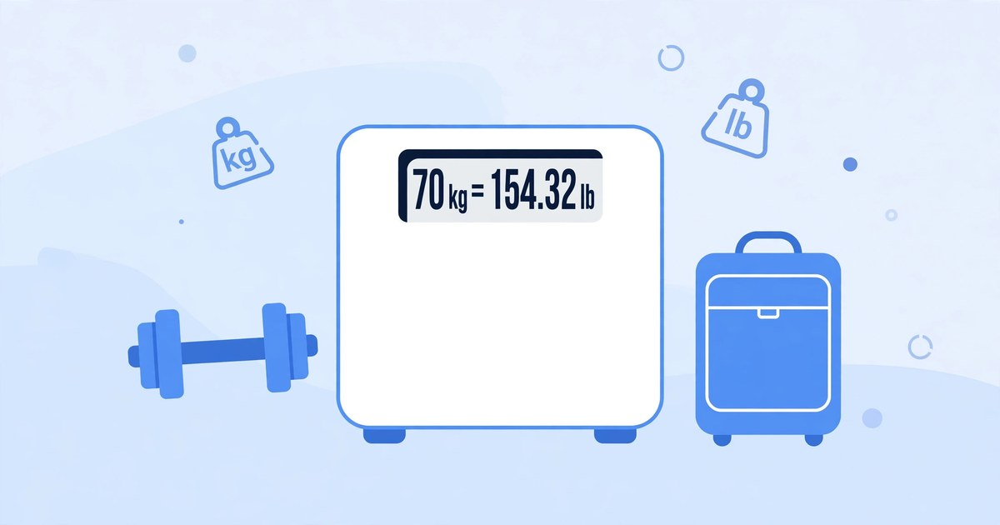

How to Convert kg to lbs Online
Turn kilograms into pounds in seconds — body weight, luggage, gym weights — free, no signup, right in your browser.
November 29, 2026 · 6 min read

To convert kg to lbs online, open ToolsHub's free Unit Converter, pick the Weight category, set Kilograms to Pounds, and type your number — the answer appears instantly. 1 kilogram is 2.20462 pounds, so multiply any weight in kilograms by 2.20462: 70 kg is 154.32 lb, 23 kg of luggage is 50.71 lb, and 100 kg is 220.46 lb. This guide shows the steps, worked examples for body weight, luggage and gym weights, a quick mental shortcut, and the mistakes that catch people out.
What the Unit Converter does
The Unit Converter covers six categories — Length, Weight, Temperature, Speed, Area and Volume — with 40 units in total. The Weight category has six: Grams, Kilograms, Ounces, Pounds, Stones and Tonnes. It uses the exact definition of the pound — 1 lb is exactly 0.45359237 kg — so 1 kg is 2.2046226 lb, shown to 8 significant figures.
Type a value in either box — kilograms in, pounds out, or the other way round — and the result line spells it out, for example "70 Kilograms = 154.32358 Pounds". The ⇄ Swap units button flips the direction in one click. Everything runs in your browser — no signup, no app, and nothing you type is sent anywhere. For the general guide to all six categories, see our earlier article How to Convert Units Online.
Convert kg to lbs in 5 steps
- Open the Unit Converter. It opens on Length, so change the category first.
- Pick Weight from the Category dropdown. The unit dropdowns switch to the six weight units.
- Set From to Kilograms and To to Pounds.
- Type your weight in the From box. The pounds appear at once, and the result line reads it back, for example "70 Kilograms = 154.32358 Pounds".
- Need the reverse? Press ⇄ Swap units. The units and values flip, so you can type pounds and read kilograms.
Worked example 1: body weight — 70 kg to lbs
A scale reads 70 kg and a fitness app asks for pounds. Multiply by the exact factor: 70 × 2.2046226 = 154.32358 lb, so about 154.32 lb. Other common weights:
- 65 kg × 2.2046226 = 143.30047 lb — about 143.30 lb.
- 80 kg × 2.2046226 = 176.36981 lb — about 176.37 lb.
- 100 kg × 2.2046226 = 220.46226 lb — about 220.46 lb.
A 70 kg person who is 1.75 m tall has a BMI of 70 ÷ (1.75 × 1.75) = 70 ÷ 3.0625 = 22.86 — work it out with ToolsHub's BMI Calculator.
Worked example 2: luggage — 23 kg to lbs
An airline's checked-bag limit is 23 kg. Multiply: 23 × 2.2046226 = 50.70632 lb, so a 23 kg bag weighs about 50.71 lb. Two more packing figures:
- 25 kg × 2.2046226 = 55.115566 lb — about 55.12 lb.
- 32 kg × 2.2046226 = 70.547924 lb — about 70.55 lb.
At check-in, the rounding matters. A 50 lb limit is not 23 kg: 50 × 0.45359237 = 22.679619 kg. So a bag packed to exactly 23 kg is about 0.71 lb over a 50 lb limit. Pack to 22.5 kg instead — 22.5 × 2.2046226 = 49.604009 lb — and you stay safely under it.
Worked example 3: the reverse — pounds back to kilograms
A gym plate is stamped 150 lb and a training plan lists weights in kilograms. Multiply by 0.45359237, the exact kilograms in one pound: 150 × 0.45359237 = 68.038855 kg, so about 68.04 kg. The tool does it too — type 150 in the Pounds box after swapping. 200 lb × 0.45359237 = 90.718474 kg, about 90.72 kg. Converted the wrong way round, 70 lb is only 31.751466 kg, not 154 lb — so check which unit the result line names.
Quick mental maths: the × 2.2 shortcut
With no tool at hand, multiply kilograms by 2.2 instead of 2.2046226. It always reads slightly low, because 2.2 is 0.21% smaller than the true factor: for 70 kg the shortcut gives 154 lb against the true 154.32358 lb — 0.32 lb short — and for 90 kg it gives 198 lb against 198.41604 lb — 0.42 lb short. Fine for a rough guess at the gym, but not for luggage limits. For the reverse, divide pounds by 2.2: 150 ÷ 2.2 = 68.18 kg against the true 68.038855 kg, so 0.14 kg high. Also handy: 1 kg is 2 lb 3.27 oz, and 500 g is 1.1023113 lb — just over a pound.
Kilograms to pounds — quick reference table
| Kilograms | Pounds |
|---|---|
| 1 kg | 2.2046226 lb |
| 10 kg | 22.046226 lb |
| 23 kg | 50.70632 lb |
| 25 kg | 55.115566 lb |
| 70 kg | 154.32358 lb |
| 100 kg | 220.46226 lb |
Stones and ounces — the units the tool also covers
Weight is not only kilograms and pounds. In the UK, body weight is often given in stones: 1 stone is exactly 14 lb, or 6.3502932 kg, so 10 stone is 140 lb, or 63.502932 kg — and the tool's Weight category includes Stones, so you can convert directly. For small weights, 1 ounce is 28.349523 g and 1 kg is 35.273962 oz. A tonne is 1,000 kg, which is 2204.6226 lb.
5 mistakes that ruin a kg to lbs conversion
- Converting the wrong way round. Multiplying pounds by 2.20462 instead of dividing gives a number more than twice too big — 70 lb becomes 154 "kg". Check the result line names the unit you wanted.
- Using 2.2 when precision matters. The × 2.2 shortcut is 0.21% low — harmless at the gym, but it can push a bag over a luggage limit. Use the exact 2.2046226 for anything that counts.
- Rounding too early. Rounding 2.2046226 to 2.2 compounds the error on big numbers: on 100 kg the shortcut is 0.46 lb out. Keep the full factor until the last step, then round.
- Mixing up 50 lb and 23 kg. 50 lb is 22.679619 kg, and 23 kg is 50.70632 lb. At check-in, that 0.71 lb gap is the difference between free and a fee.
- Forgetting stones in UK contexts. A weight quoted as "10 stone" is 140 lb, not 10 lb. If a form asks for stones, switch the tool's To unit to Stones instead of guessing.
Frequently asked questions
How many pounds is 1 kilogram?
1 kilogram is 2.2046226 pounds, usually rounded to 2.20 lb. Multiply any weight in kilograms by 2.20462 to get pounds: 70 kg is 154.32358 lb, and 23 kg is 50.70632 lb.
How do I convert 70 kg to lbs?
Multiply 70 by 2.2046226, which gives 154.32358 lb — about 154.32 lb. In ToolsHub's Unit Converter, pick Weight, set Kilograms to Pounds, type 70, and the result line reads "70 Kilograms = 154.32358 Pounds".
What is 23 kg in lbs, and is it under a 50 lb luggage limit?
23 kg is 50.70632 lb, so it is just over a 50 lb limit. A 50 lb limit is 22.679619 kg, so pack to about 22.5 kg (49.604009 lb) to stay safely under it.
Is the kg to lbs converter free, and do I need to sign up?
Yes, completely free, with no sign-up and no app to install. Everything runs in your browser, and nothing you type is sent anywhere.
Related tools: Unit Converter · BMI Calculator · Percentage Calculator